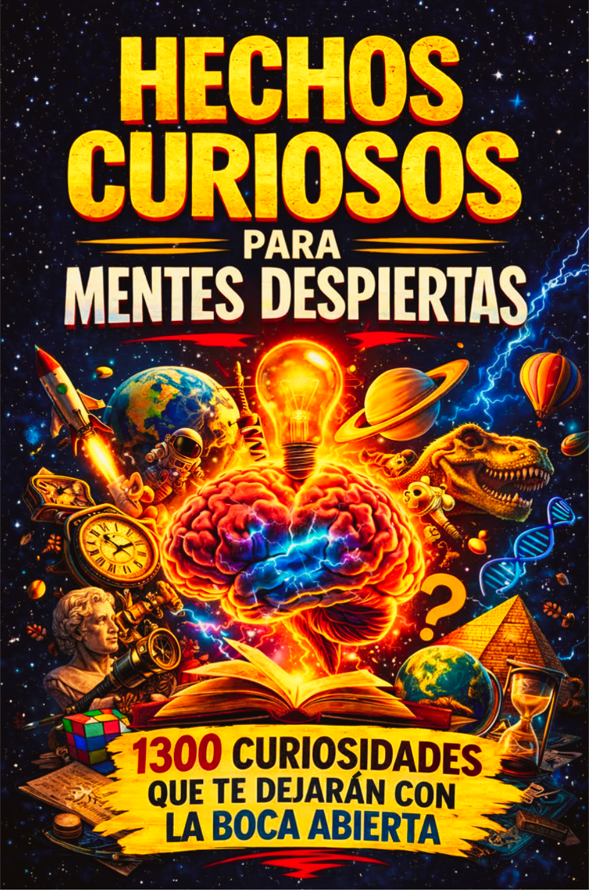

Hechos curiosos para mentes despiertas
Una sorprendente colección de curiosidades sobre historia, ciencia, naturaleza, cultura, personajes, lugares y vida cotidiana. Un libro para aprender algo nuevo en cada página.
Comprar en AmazonColección Curiosidades del Mundo
Una colección de libros para lectores curiosos que disfrutan aprendiendo hechos sorprendentes sobre historia, cultura, cine, sociedad y muchos otros temas.

Una sorprendente colección de curiosidades sobre historia, ciencia, naturaleza, cultura, personajes, lugares y vida cotidiana. Un libro para aprender algo nuevo en cada página.
Comprar en Amazon